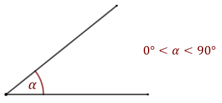
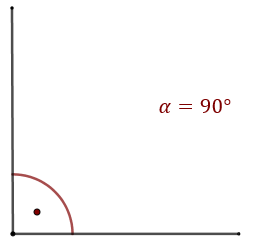
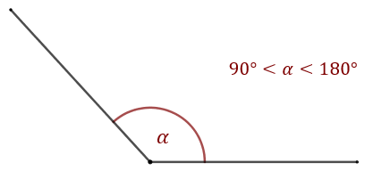
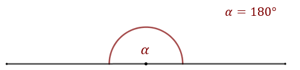
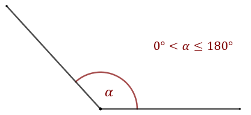
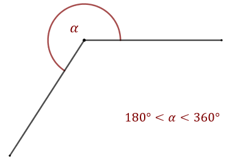
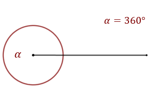

- Kąt ostry ma miarę większą niż \(0^\circ \) i mniejszą niż \(90^\circ \). 
- Kąt prosty ma miarę równą \(90^\circ \). 
- Kąt rozwarty ma miarę większą niż \(90^\circ \) i mniejszą niż \(180^\circ \). 
- Kąt półpełny ma miarę równą \(180^\circ \). Ramiona kąta tworzą linię prostą. 
- Kąt wypukły ma miarę większą niż \(0^\circ \) i mniejszą lub równą \(180^\circ \). Kąty:
ostry, prosty, rozwarty i półpełny są kątami wypukłymi. 
- Kąt wklęsły ma miarę większą niż \(180^\circ \) i mniejszą niż \(360^\circ \). 
- Kąt pełny ma miarę równą \(360^\circ \). Ramiona kąta pokrywają się. 
Temat kątów został poruszony również w dziale:
Pojęcie miary kąta i jego
uogólnienie.